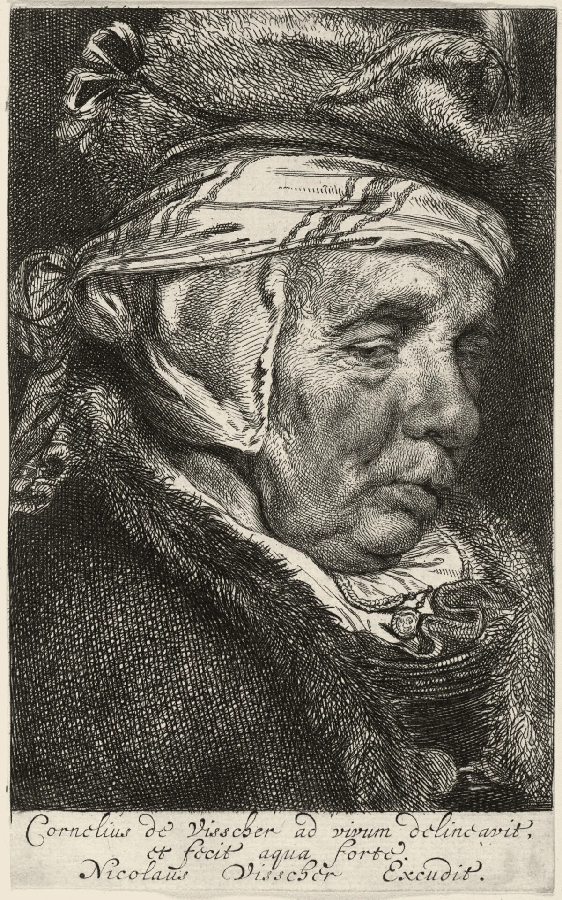

· Edición 71 · 4 min de lectura
¿Se puede evitar la demencia? En países ricos ya empezó a bajar
Revisada el · 1 actualización posteriores a la publicación

¿Se puede evitar la demencia? En países ricos ya empezó a bajar
Ver todo el tema, de principio a fin →
En pocas palabras. ¿Se puede evitar perder la memoria? En parte: en Estados Unidos y otros países ricos, el riesgo de demencia (perder la memoria hasta no valerse solo) lleva décadas bajando a una misma edad; en México y Perú, subió. ¿Y a mí qué? Casi la mitad de los casos se podría evitar o retrasar cuidando el oído, la presión y el colesterol en la mitad de la vida, según The Lancet.
El dato curioso. En Antioquia vive el grupo de familias más grande del mundo con alzhéimer heredado: quien carga la mutación paisa suele empezar a olvidar hacia los 44 años. Aliria Rosa Piedrahita de Villegas la cargaba y siguió lúcida hasta pasados los 70. En 2019, Nature Medicine halló la pista: dos copias de una variante rara de otro gen, llamada Christchurch por la ciudad neozelandesa donde se descubrió. Es un solo caso, no una cura.
¿Qué está cambiando? Este año, en Medellín, 240 personas de esas familias empezaron a probar medicamentos para frenar la enfermedad antes del primer olvido.
Pero casi ninguna demencia se hereda así. (Conocimiento general.) En Framingham, un pueblo cerca de Boston, de cada 100 personas de 60 años o más, unas 4 desarrollaban demencia en cinco años a finales de los setenta; hacia 2010, unas 2.
En América Latina va al revés: según un estudio publicado en julio en JAMA Neurology, subió en México, Perú y Puerto Rico en 20 años.
10 de cada 100
A comienzos de los años 2000.
15 de cada 100
Unos 20 años después. En Perú, de 8 a 12.
Fuente: Llibre-Guerra, Prina y otros, JAMA Neurology (julio de 2026), según la Universidad de Washington en San Luis
Lo que cambia en 10 a 50 años: los casos nuevos en el mundo pasarían de 11,4 millones en 2023 a 24,7 millones al año en 2050, según la Universidad de Nueva Gales del Sur. En Colombia, hacia 2050, uno de cada cuatro habitantes tendrá 60 años o más, según el DANE.
¿Por qué? La demencia es como una gotera: el agua entra durante años antes de que se vea la mancha en el techo. En las familias antioqueñas, el daño empieza hacia los 28 años, según The Lancet Neurology.
- Goteras que se pueden tapar. Catorce factores explicarían unos 45 de cada 100 casos, según la comisión de The Lancet. Pesan más oír mal sin tratarse y el colesterol «malo» alto.
- Por qué baja o sube. Baja con más estudio y mejor control de la presión; sube con más obesidad y diabetes, según el estudio latinoamericano.
¿Qué significa para Colombia?
- Sin cifra oficial. En una encuesta de 2015, unos 11 de cada 100 mayores de 60 mostraron señales de demencia, según la Universidad de los Andes.
- Sin plan. No hay un plan nacional de demencias, según expertos citados por El Colombiano y El Espectador. (No verificado.)
¿Quién se está preparando? En 11 países latinoamericanos, Colombia incluida, 1.065 personas de 60 a 77 años en riesgo hicieron dos años de ejercicio guiado (salsa y tango incluidos), comida sana, ejercicios mentales y control de la presión. Sus pruebas de memoria y razonamiento mejoraron 55% más que las de quienes solo recibieron consejos, según el ensayo LatAm-FINGERS, en The Lancet.
Chile tiene un plan nacional de demencia desde 2017.
Pero ojo.
- Es un cálculo. El «casi la mitad» supone que esos factores la causan y se pueden quitar del todo.
- Los audífonos no son vacuna. En un ensayo de 2023 con 977 mayores de 70, no frenaron el deterioro en general.
- Dos años no son 30. LatAm-FINGERS midió pruebas de memoria, no casos de demencia.
- Sin Colombia. El estudio latinoamericano no midió al país.
Lo que ya habíamos contado. El 23 de octubre contamos que hacia 2036 Colombia tendrá más mayores de 60 años que niños (ver esa edición).
Qué hacer con esto
Para ir pensando. Si alguien en casa sube el volumen o pide que le repitan, conviene un examen del oído.
Cómo prepararse. Conocer la propia presión y el colesterol desde los 40: pesan mucho y medirlos es barato.
Ojo con el cuento. «Este suplemento protege la memoria.» Preguntar si un ensayo en personas contó casos de demencia.
Dos lecturas
Las dos posturas sobre el tema, en su mejor versión
Prevenir es tarea de un plan público. Medir la presión y el oído en la consulta de rutina, tratar el colesterol y sostener la escuela se hace mejor con programas que con consejos sueltos. La caída de Framingham fue de toda una población, no de voluntades individuales.
Primero, lo que ya está probado. El «casi la mitad» es un cálculo y los ensayos muestran efectos modestos. Antes de un plan nuevo, conviene hacer bien lo básico: diagnosticar a tiempo y apoyar a las familias que ya cuidan.
Quién decide y cuándo
Quién decide. El Ministerio de Salud, que podría adoptar un plan nacional de demencias, como pide la OMS.
Cuándo. Sin fecha. El plan mundial de la OMS va hasta 2031.
Cómo participar. Un derecho de petición al Ministerio puede preguntar si prepara uno. (Conocimiento general.)
La paradoja del día
Lo más absurdo de la edición, en dos líneas
El grupo de familias que más le ha enseñado al mundo sobre el alzhéimer vive en Antioquia. Según los expertos, Colombia todavía no tiene un plan para la demencia.
Para conversar
La pregunta. Si la memoria de los 80 se juega en la presión y el oído de los 45, ¿a quién le toca recordarlo: al médico, a la familia o a uno mismo?
Para leer más
Libros para seguir con el tema
El valle del olvido, de Jennie Erin Smith (en español, Rey Naranjo Editores; publicado en inglés como Valley of Forgetting). La periodista sigue al neurólogo Francisco Lopera, que en los años ochenta recorrió las montañas de Antioquia buscando familias con demencia, y a los pacientes que hoy reciben medicamentos experimentales en Medellín. Disponible en Santo & Seña
¿Le interesa ver las fuentes?
Todos los documentos y datos que usamos
33 fuentes: 10 académicas, 2 oficiales, 2 de datos, 9 de organizaciones, 8 de prensa, 2 de referencia.
- Académica UNSW Sydney, Centro para el Envejecimiento Cerebral Saludable (octubre de 2026). New yearly dementia cases to double by 2050: study (JAMA Neurology)
- Académica Universidad de Washington en San Luis (13 de julio de 2026). Dementia rising across Latino populations, multidecade study finds (JAMA Neurology)
- Organización Science Media Centre España (julio de 2026). La demencia aumenta en varios países de América Latina y el Caribe, según un estudio de dos décadas
- Académica Satizabal y otros, The New England Journal of Medicine (2016), en PMC. Incidence of Dementia over Three Decades in the Framingham Heart Study
- Organización Boston University Medical Center, comunicado (febrero de 2016), en ScienceDaily. Incidence of dementia may be declining, new study reveals
- Académica Livingston y otros, The Lancet (2024). Dementia prevention, intervention, and care: 2024 report of the Lancet standing Commission
- Organización Alzheimer Europe (agosto de 2024). 2024 Lancet Commission underscores potential for dementia risk reduction, identifying 14 modifiable risk factors
- Académica Reiman y otros, The Lancet Neurology (2012), en PMC. Brain imaging and fluid biomarker analysis in young adults at genetic risk for autosomal dominant Alzheimer's disease in the presenilin 1 E280A kindred
- Académica Arboleda-Velasquez y otros, Nature Medicine (2019). Resistance to autosomal dominant Alzheimer's disease in an APOE3 Christchurch homozygote: a case report
- Prensa Blu Radio. Los caminos que una mujer inmune al alzhéimer en Antioquia le abrió a la ciencia
- Prensa BBC Mundo, en 24 Horas (septiembre de 2024). Muere Francisco Lopera, el eminente neurólogo colombiano descubridor de la mutación paisa
- Oficial ClinicalTrials.gov, Biblioteca Nacional de Medicina de Estados Unidos. A Study of Donanemab, RG6289, or the Combination in PSEN1 E280A Mutation Carriers (NCT06996730)
- Prensa Telemedellín (2026). Universidad de Antioquia inicia nuevo ensayo para prevenir el alzhéimer en portadores de la mutación paisa
- Académica Universidad de los Andes, Escuela de Gobierno (noviembre de 2023). Nota de política 45: patrón social del deterioro cognitivo en Colombia según la encuesta SABE 2015
- Académica Revista Colombiana de Psiquiatría (2024), en Elsevier. Association between cognitive impairment and socioeconomic factors in older adults in Colombia (encuesta SABE 2015)
- Prensa Infobae (22 de septiembre de 2026). Día Mundial del Alzheimer: señales de alerta y factores de riesgo modificables ante un trastorno que afecta a 300.000 colombianos
- Organización UNFPA Colombia, con datos de los censos del DANE. Envejecimiento y derechos de las personas mayores (capítulo 3.3)
- Datos DANE. Proyecciones de población: nota técnica (julio de 2025)
- Prensa El Colombiano. Demencia en Colombia: el envejecimiento, un reto de salud pública
- Prensa El Espectador (columna, 2025). Colombia necesita un plan nacional de demencias ya
- Organización Alzheimer's Association, AAIC 2026 (13 de julio de 2026). Lifestyle program improves brain health among older adults at risk for dementia across Latin America (LatAm-FINGERS, The Lancet)
- Organización Alzheimer Europe (julio de 2026). LatAm-FINGERS trial reports cognitive benefits from a lifestyle intervention adapted for Latin American populations
- Oficial Ministerio de Salud de Chile (octubre de 2025). Consulta pública: Plan Nacional de Demencia 2025-2035
- Organización Alzheimer's Association, AAIC 2023. Hearing aids slow cognitive decline in people at high risk (ensayo ACHIEVE, The Lancet)
- Académica Lin y otros, The Lancet (2023). Hearing intervention versus health education control to reduce cognitive decline in older adults with hearing loss in the USA (ACHIEVE)
- Organización Alzheimer Europe (mayo de 2025). World Health Assembly approves six-year extension to the Global Action Plan on the Public Health Response to Dementia
- Organización CTAD, Clinical Trials on Alzheimer's Disease. CTAD 2026, Boston, 16 al 19 de noviembre
- Referencia Santo & Seña. El valle del olvido, de Jennie Erin Smith (Rey Naranjo Editores)
- Referencia Librería Nacional. El valle del olvido, de Jennie Erin Smith (ficha)
- Datos Universidad de Exeter, Global Carbon Budget 2026. Global Carbon Budget 2026
- Prensa Science News (noviembre de 2026). Fossil fuel emissions are down in 2026. Green energy isn't the reason
- Académica Queen Mary University of London (2026). Global wildlife trade involves more than 100,000 species, new study reveals
- Prensa The Conversation, en Gizmodo (2026). Scientists once calculated the date of doomsday, and it's next month
Glosario
Las palabras técnicas, explicadas
- Demencia: deterioro de la memoria, el lenguaje o el juicio lo bastante grave para impedir valerse solo. No es una parte normal del envejecimiento.
- Alzhéimer: la causa más común de demencia. Se acumulan en el cerebro proteínas que dañan las neuronas.
- Mutación paisa: cambio en el gen PSEN1 que causa alzhéimer de comienzo temprano en familias de Antioquia.
- Colesterol LDL: el llamado colesterol malo; alto, tapa las arterias.
- Incidencia: cuántos casos nuevos aparecen en un tiempo dado.
- Prevalencia: cuántas personas tienen la enfermedad en un momento dado.
- Ensayo aleatorizado: estudio en el que se sortea quién recibe el tratamiento y quién no, para comparar de forma justa.
- Tamizaje: prueba corta para encontrar a quienes podrían tener una enfermedad; no es un diagnóstico.
Nota metodológica
Cómo se hizo esta edición y qué no pudimos verificar
El horizonte. ¿Cambia el rumbo de cómo vive la gente, en Colombia o en el mundo, dentro de 10 a 50 años? Sí. Los casos nuevos de demencia en el mundo pasarían de 11,4 millones en 2023 a 24,7 millones al año en 2050, según la proyección del estudio de la Universidad de Nueva Gales del Sur en JAMA Neurology, que supone tasas constantes y una población que envejece. En Colombia, la proporción de mayores de 60 pasaría de 13 de cada 100 en 2018 a unas 25 en 2050, según el DANE. La serie larga es la de Framingham (de finales de los setenta a comienzos de la década de 2010) y la de los estudios del grupo 10/66 en América Latina (dos rondas separadas por unos 20 años). Lo que pase con la presión, el oído y el colesterol de quienes hoy tienen 40 años decide cuánta demencia habrá entre 2050 y 2070.
El filtro. Entra por la puerta del cambio de fondo: hay series de más de diez años y una proyección institucional, toca a Colombia por un canal concreto (el envejecimiento rápido, la falta de un plan y la investigación antioqueña) y hay algo que preparar (la consulta de control, un plan nacional). La puerta de entrada de esta semana es el congreso mundial de ensayos clínicos de alzhéimer, que se celebra en Boston del 16 al 19 de noviembre; los estudios de fondo son de julio y octubre, así que lo decimos con franqueza: no es un hecho de las últimas 48 horas. Es un tema de salud y ciencia, del mundo y de Colombia. Es martes: con un nudo el lunes, la mezcla de la semana no pesa todavía. La demencia nunca había sido tema; el 23 de octubre contamos el envejecimiento y el cuidado de los mayores.
Puntaje. De 1 a 3 en cada criterio; peso en la vida y horizonte valen doble (máximo 24). Solo entra un tema con horizonte 3.
| Tema | Puerta | ¿Cambia el rumbo en 10 a 50 años? | Alcance | Peso | Horizonte | Cercanía | Margen | Mirada | Total | Resultado |
|---|---|---|---|---|---|---|---|---|---|---|
| Demencia: baja en países ricos, sube en América Latina | fondo | Sí: cuánta demencia habrá cuando envejezcan quienes hoy tienen 40 años | 3 | 3 | 3 | 3 | 2 | 3 | 23 | Elegido (edición 71) |
| Emisiones fósiles bajan 0,4% en 2026 (mundo) | fondo | Sí: cuánto le queda al mundo para no pasar de 1,5 °C | 3 | 3 | 3 | 2 | 1 | 1 | 19 | Clima, contado el 9 de noviembre |
| Población mundial y el «fin del mundo» de 1960 (mundo) | fondo | Sí: la población dejará de crecer este siglo | 3 | 2 | 3 | 2 | 1 | 2 | 18 | Nacimientos, contados en octubre |
| Baterías de sodio en producción masiva (mundo) | fondo | Sí: guardar energía sin depender del litio | 3 | 2 | 3 | 2 | 1 | 2 | 18 | Pegada a la energía solar |
| Comercio de especies silvestres (mundo) | fondo | Sí: qué especies sobreviven | 2 | 2 | 3 | 2 | 1 | 2 | 17 | Biodiversidad, contada en octubre |
| Celulares en los colegios | nudo | No está claro: la evidencia es mixta | 2 | 2 | 2 | 3 | 2 | 1 | 16 | No pasa el horizonte |
| Salario mínimo 2027 | ninguna | No: es una decisión de un año | 3 | 2 | 1 | 3 | 3 | 1 | 15 | No pasa el horizonte |
En el tema elegido, el margen vale 2: no hay una decisión con fecha, pero sí algo concreto que hacer (medir la presión y el oído). La mirada vale 3: los medios contaron por separado el estudio latinoamericano y el ensayo LatAm-FINGERS en julio, pero no encontramos quien los conectara con la caída en los países ricos y con lo que significa para Colombia. Ningún otro tema llega a 19 con un hecho propio y sin repetir lo reciente, así que hoy hay una sola edición.
Hicimos unas 60 búsquedas en español e inglés. No pudimos abrir los documentos completos, tampoco los artículos de JAMA Neurology, The Lancet ni The New England Journal of Medicine; trabajamos con resúmenes, comunicados de las universidades y resultados de búsqueda. De 33 fuentes, 25 no son de prensa.
Quedó sin verificar o con límites:
- México y Perú. Las cifras por país (México, de 9,6% a 14,5%; Perú, de 7,6% a 11,7%) son del comunicado de la Universidad de Washington en San Luis. Otro análisis de los mismos datos, de 2024, da cifras distintas, con otro método. El comunicado da para los cinco sitios juntos un paso de 10,6% a 16,9%, que no cuadra con las cifras por país; no lo usamos.
- Framingham. Las 4 y 2 de cada 100 son nuestro redondeo de 3,6 y 2,0 casos por cada 100 personas en cinco años. La caída se vio solo en quienes terminaron el bachillerato, la de alzhéimer por sí solo no fue significativa y la población del estudio es de una sola zona, más bien blanca y acomodada. El «20% por década» que circula viene del comunicado, no del artículo.
- El casi la mitad. El 45% es una fracción calculada por la comisión de The Lancet: supone que los 14 factores causan la demencia y que se pueden eliminar. El colesterol LDL pesa unos 7 de cada 100 casos; oír mal, otro tanto, según la comisión.
- Colombia. Los 11 de cada 100 salen de una prueba corta (una versión del minimental) en la encuesta SABE de 2015, según la Universidad de los Andes; con otro punto de corte, otro estudio da 20 de cada 100 con algún deterioro. Circula la cifra de 300.000 personas con alzhéimer, pero es una estimación de expertos sin fuente oficial.
- El plan. Que Colombia no tiene un plan nacional de demencias lo dicen una columna en El Espectador (2025) y expertos citados por El Colombiano; no encontramos un documento del Ministerio de Salud que lo confirme o lo desmienta a noviembre de 2026. Tampoco confirmamos si Chile ya aprobó su plan 2025-2035: lo sometió a consulta en octubre de 2025.
- El ensayo de Medellín. El registro estima el comienzo en enero de 2026 y el cierre en junio de 2030; la prensa habla de abril. Que es el grupo de familias más grande del mundo con alzhéimer heredado lo dice la BBC, al reseñar la obra de Francisco Lopera.
- LatAm-FINGERS. El 55% compara cuánto mejoraron dos grupos en una medida de memoria y razonamiento; no quiere decir que cada persona mejoró 55%. Las cifras vienen del comunicado de la Alzheimer's Association; el estudio salió en The Lancet.
- Los audífonos. En el ensayo ACHIEVE, el efecto en el grupo de mayor riesgo (un deterioro 48% más lento) fue un análisis de un subgrupo; el resultado principal fue nulo.
- Aliria Piedrahita. Su historia viene del estudio de Nature Medicine de 2019, que no la nombra, y de la prensa colombiana, que difundió su nombre después.
La imagen es un aguafuerte de Cornelis Visscher, de hacia 1650, de la colección de dominio público del Art Institute of Chicago. Wikimedia Commons rechazó la descarga por exceso de pedidos y la agregamos en la tarde.
El libro está en el catálogo de Santo & Seña, según su ficha y sus listados (Rey Naranjo Editores), y la ficha lo muestra disponible; la autora y el título original los confirmamos en la ficha de la Librería Nacional y en un catálogo de biblioteca.